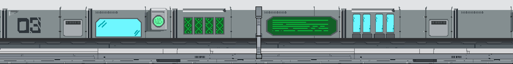
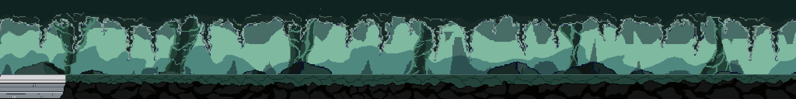

THE DEEPEST WING
The starting point of Zoi's journey. This is the deepest part of the laboratory where the outbreak began. You will encounter mad scientists who have lost their sanity.
Zoi must navigate through four distinct sectors of the underground facility to reach the surface. Each stage presents unique environmental hazards and evolved threats.

 STAGE 1: SECTOR 03
STAGE 1: SECTOR 03
The starting point of Zoi's journey. This is the deepest part of the laboratory where the outbreak began. You will encounter mad scientists who have lost their sanity.

 STAGE 2: SECTOR 02
STAGE 2: SECTOR 02
In this second sector, the threats evolve. Zoi will encounter zombified animals—former experimental creatures that have been mutated by the biohazard leak.

 STAGE 3: SECTOR 01
STAGE 3: SECTOR 01
The penultimate challenge before reaching the surface. The enemies here vary greatly in size and type, and are three times stronger than those in previous stages.

 STAGE 4: EXIT SECTOR
STAGE 4: EXIT SECTOR
The final obstacle. Zoi faces poisonous bats that have invaded the upper levels during the apocalypse. These winged threats hide in the rafters.